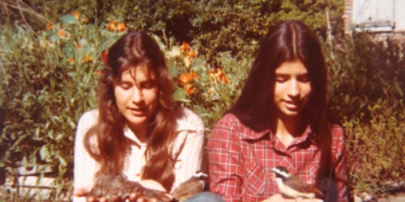

Nota de tapa
Las Oesterheld

Estela, Diana, Beatriz y Marina. Las cuatro hijas de Héctor Oesterheld, el creador de El Eternauta. Militantes montoneros, los cinco fueron desaparecidos por la dictadura militar. Pero detrás de la tragedia, emerge una historia plena de belleza, coraje y compromiso. ...